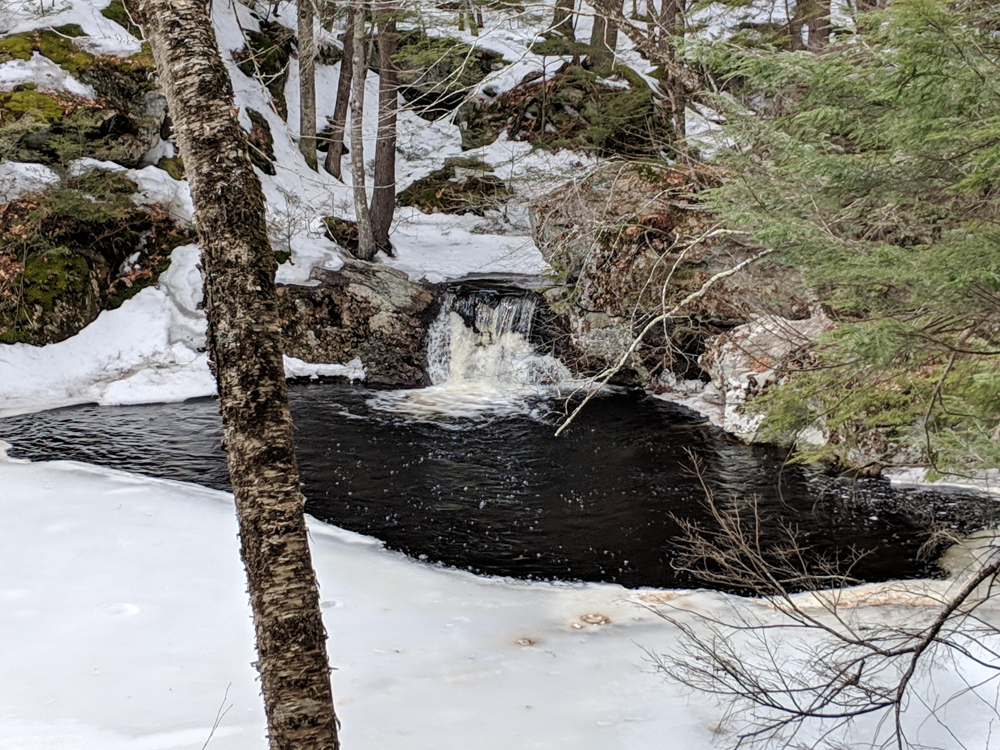
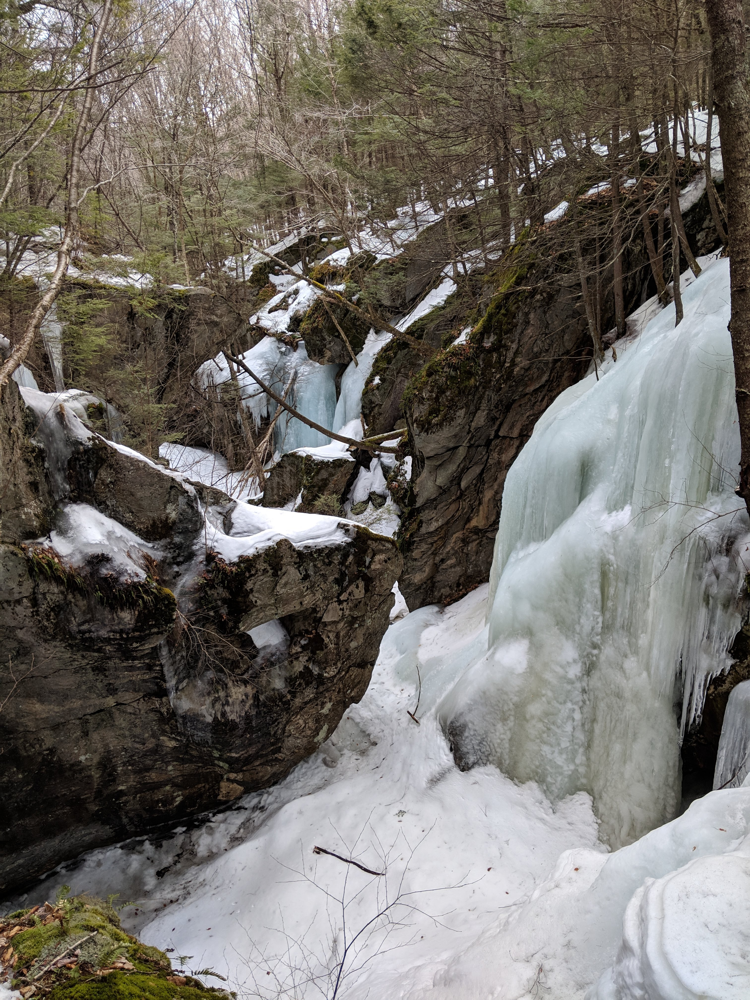
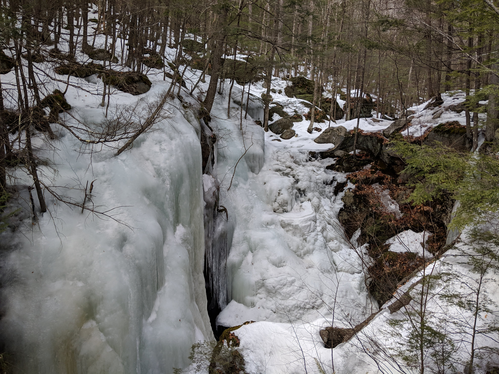

Distance
Distance Elevation
Elevation Observed Wildlife
Observed WildlifeThis a really cool waterfall not too far from Boston. It is a terrific place to visit in the spring when the melting snow enhances the fall's power. The ravine above the falls is a very peaceful place as well. This route starts from a parking lot on 32 and follows a path for a mile and a half before reaching the pretty brook that transforms into the falls. Leave some time to climb down and explore the falls from down below, bare in mind it is a little tricky to get down there.





I took a longer route to get here, this time. It added some mileage, but not some scenery. I definitely recommend the first route.